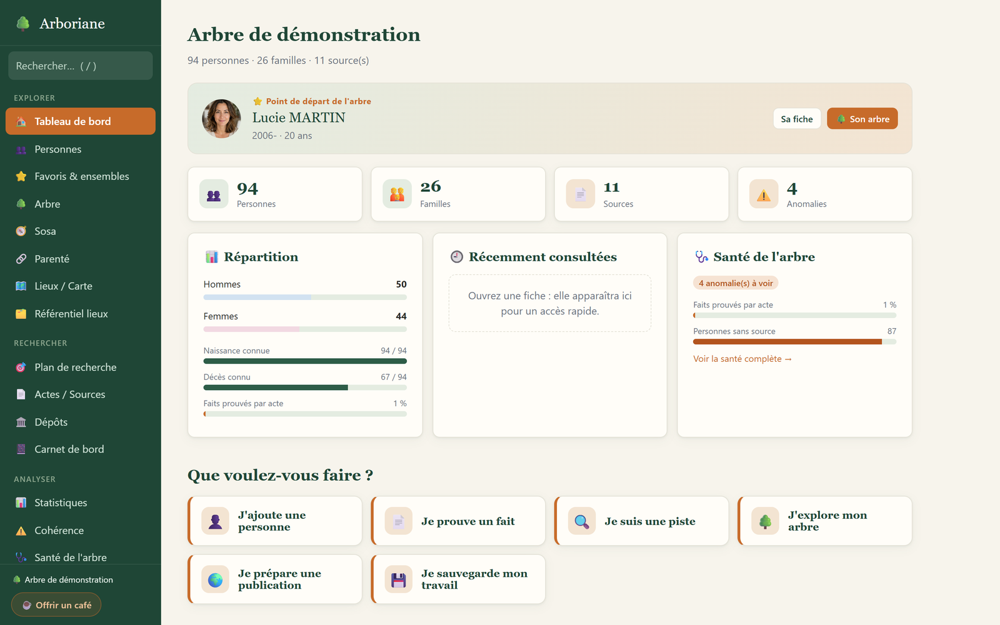
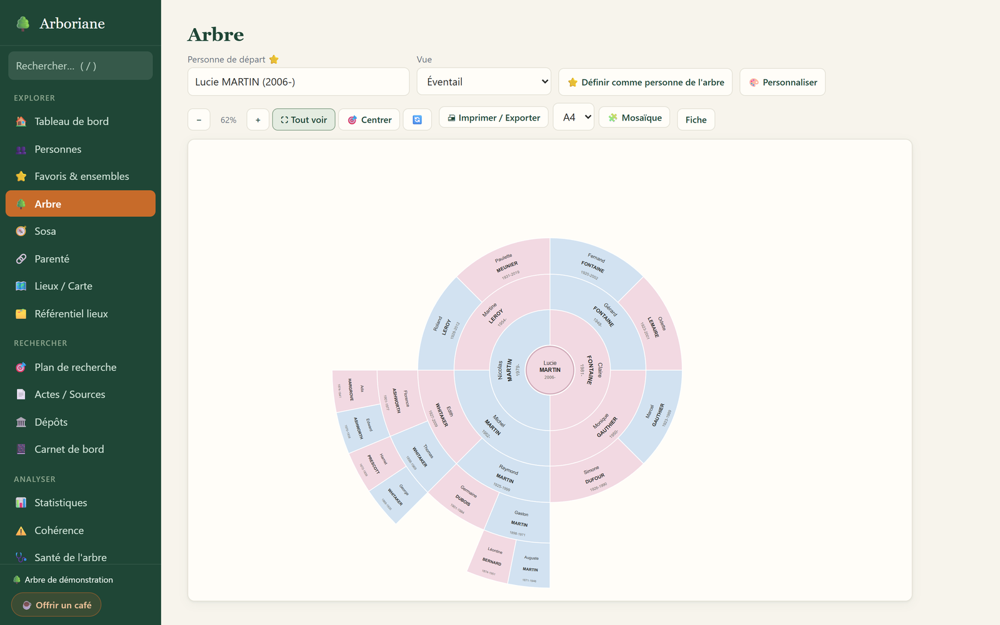
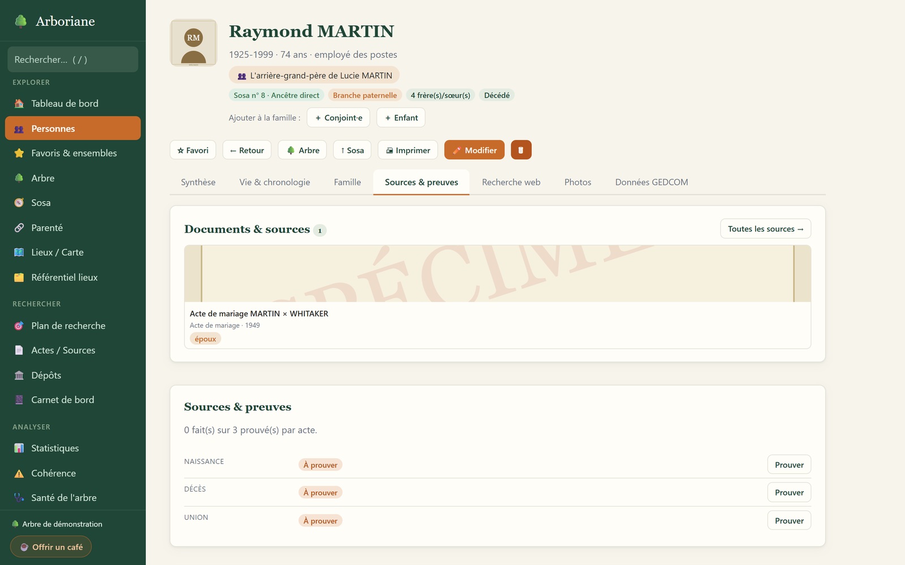
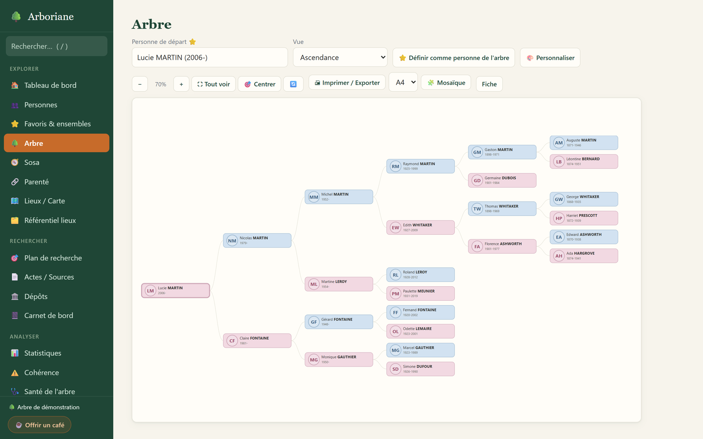
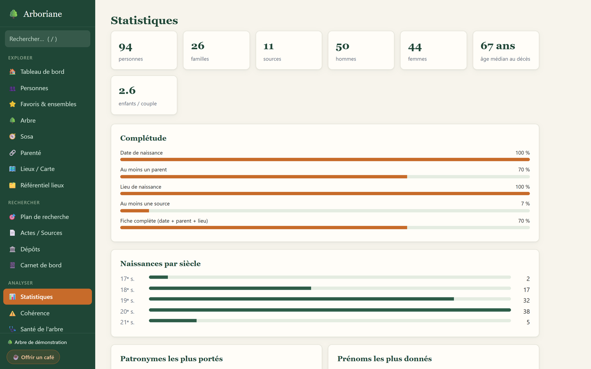
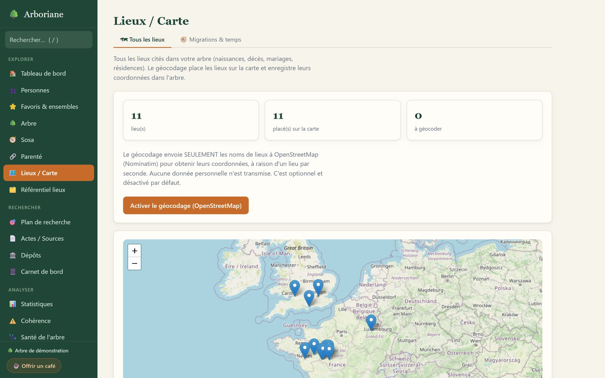
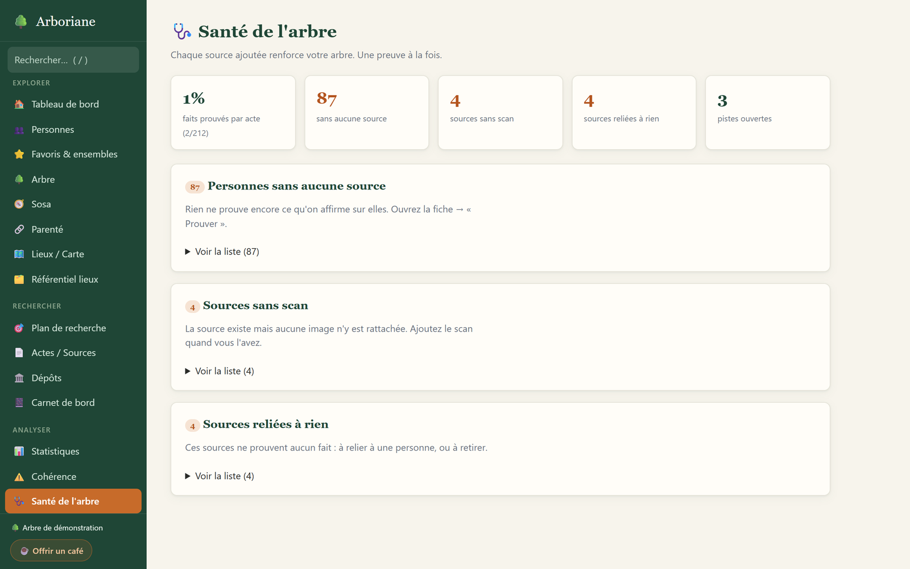

Un atelier local et privé de généalogie sourcée. Vos documents deviennent des preuves, vos preuves des faits, vos faits une histoire familiale à transmettre.
Windows · gratuit · ≈ 13 Mo · version 1.10.1 · code source sur GitHub
L'installateur n'est pas signé : Windows affichera « éditeur inconnu ». Vous pouvez vérifier son empreinte SHA-256, publiée avec chaque version.
Ce que fait Arboriane
Une chaîne complète pour bâtir un arbre sourcé — chaque écran pensé pour prouver ce que vous avancez et garder le contrôle de vos données.
Fiches riches, chronologie de vie, cellule familiale complète (parents, unions, fratrie) et ajout guidé d'un proche sur la même fiche détaillée — portraits et recherche web pré-remplie qui n'envoie aucune donnée de l'arbre.
Le cœur d'Arboriane : chaque fait est prouvé par acte, déclaré ou à prouver. Sources typées, citations qualifiées, visionneuse d'actes, dépôts d'archives — et une même source qui relie d'un geste toutes les personnes qu'elle cite (enfant et parents, foyer d'un recensement).
Éventail, ascendance, descendance, tableau par génération — personnalisables — et une mosaïque A4 / A3 / A0 pour l'afficher au mur.
Carte des lieux (géocodage optionnel) et référentiel hiérarchique avec noms datés — une commune ou un pays seul restent valides.
Sosa, parenté, implexe, consanguinité, numérotation d'Aboville, chronologie multi-personnes et contemporains.
Cohérence, santé de l'arbre, qualité des sources, plan de recherche par dépôt, fusion assistée des doublons.
Index des métiers, unions, ascendance/descendance, éphéméride (exportables), favoris, ensembles et carnet de bord.
Import / export 5.5.1 fidèle, encodages, dates, calendrier républicain, et un export autoporteur (images embarquées).
En images
Toutes les images ci-dessous sont de vraies captures d'écran d'Arboriane, ici sur la famille de démonstration — 100 % fictive.







Vie privée
La confidentialité n'est pas une case cochée après coup : c'est l'architecture même de l'application.
Le serveur n'écoute que sur 127.0.0.1. Rien ne sort de
l'ordinateur sans un geste explicite de votre part.
Tout est réuni dans un dossier autonome, avec sauvegardes horodatées automatiques avant les actions sensibles.
GEDCOM standard et fichiers lisibles : vos données vous appartiennent et restent portables, aujourd'hui comme demain.
Installer sur Windows
Pas besoin de connaître GitHub : trois clics suffisent. On vous accompagne, y compris pour l'avertissement bien connu de Windows.
Cliquez sur le bouton : votre navigateur télécharge un fichier nommé Installer-Arboriane.exe. Une fois terminé, double-cliquez dessus.
⬇ Télécharger ArborianeComme Arboriane est une petite application indépendante, Windows affiche parfois cet écran bleu. Ce n'est pas une alerte de virus : Windows signale simplement une application qu'il ne « connaît » pas encore. Cliquez sur Informations complémentaires, puis sur Exécuter quand même.
Microsoft Defender SmartScreen a empêché le démarrage d'une application non reconnue. L'exécution de cette application peut présenter un risque pour votre PC.
Informations complémentaires
Application : Installer-Arboriane.exe
Éditeur : inconnu
Après l'installation, Arboriane place un raccourci sur le Bureau et dans le menu Démarrer. À l'ouverture, cette petite fenêtre apparaît, puis l'application s'affiche dans votre navigateur. Gardez-la ouverte tant que vous travaillez ; le bouton Quitter ferme proprement l'application.
Votre atelier de généalogie, local et privé
Au premier lancement, choisissez Juste découvrir pour ouvrir une famille 100 % fictive de près de 90 personnes sur douze générations — sources, actes, dépôts, carte, portraits. De quoi explorer chaque écran sans toucher à vos propres données. Quand vous êtes prêt·e : J'ai déjà un arbre (importer un GEDCOM) ou Je pars de zéro.